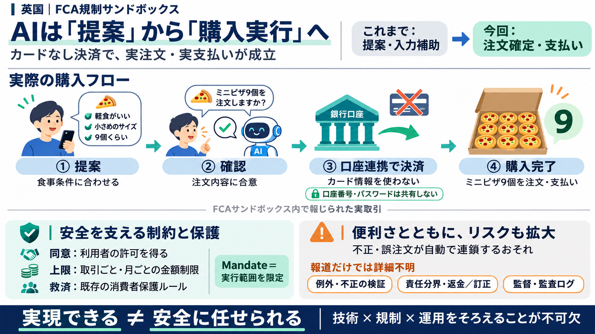

Papa John’s AI agent pays by bank, not card, in TrueLayer’s FCA pilot
TrueLayer argues that bank payments suit AI agents better than cards, because shoppers can set limits with their bank wi…

TrueLayer argues that bank payments suit AI agents better than cards, because shoppers can set limits with their bank wi…
# TrueLayer ID: B26a4VGOwugN Website: www.truelayer.com Legal name: TrueLayer Limited Headquarters: London, England, Uni…
PayPalが発行した「エージェンティック・コマース」に関する技術白書によれば、決済業界の根底にあるロジックは「人間とコンピュータの対話」から「マシンによる自律的決済」へと移行しつつある。ガートナーの予測モデルによれば、2028年までに世界…
(CoinMarketCap) ### 3. Tether、ローカルAIによる決済機能を拡充（2026年11月11日） 概要： Tetherは、AIエージェント向けのタスクに対応する、パラメーター数8億のモデル「QVAC BotPsy」…
過去20年間、テック大手の覇権は「エントリーポイント（入り口）」の支配の上に築かれてきた。グーグルは検索の入り口を独占し、アップルはアプリ配信の入り口を固め、メタはソーシャルの入り口を統制した。ユーザーとデジタル世界の最初の接点を握る者が、…